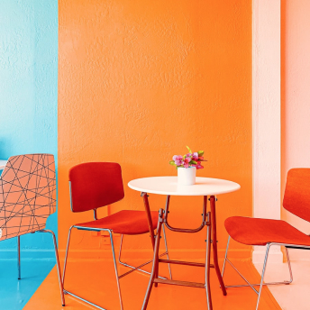

ТЕХНОЛОГИИ
Отец жанра. Как уже забытый трип-хоп определяет самую популяр…
Новая мода на топовые наряды необычных цветов. В сезоне – топики, шорты-боксеры, сланцы и сандалии. А также большие солнечные очки и яркая шляпка.
ИСТОЧНИК